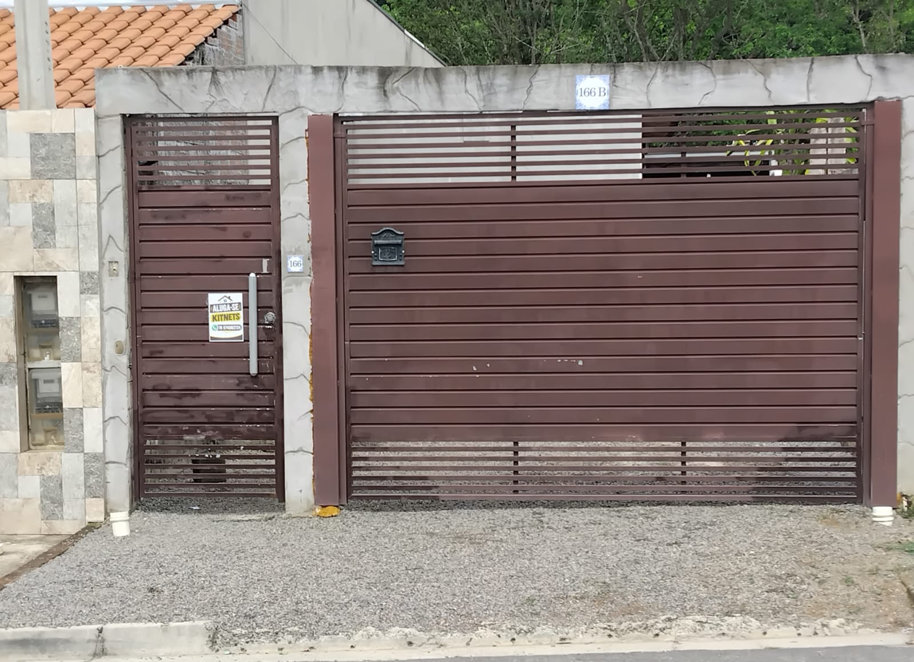

Para locação
Jaguariúna — SP
Kitnet para alugar em Jaguariúna
Se você procura aluguel de kitnet em Jaguariúna, esta opção tem sala e cozinha integradas, banheiro, quintal amplo e garagem com espaço para um carro e uma motocicleta. Consulte o valor mensal e as condições de locação.
- Ambientes: Sala e cozinha integradas, banheiro, quintal amplo e vaga de garagem com espaço para estacionar 1 carro e 1 motocicleta.
- Disponibilidade: Disponível